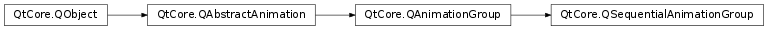

QSequentialAnimationGroup¶
Note
This class was introduced in Qt 4.6.
Synopsis¶
Functions¶
- def
addPause(msecs) - def
currentAnimation() - def
insertPause(index, msecs)
Signals¶
- def
currentAnimationChanged(current)
Detailed Description¶
The
PySide2.QtCore.QSequentialAnimationGroupclass provides a sequential group of animations.
PySide2.QtCore.QSequentialAnimationGroupis aPySide2.QtCore.QAnimationGroupthat runs its animations in sequence, i.e., it starts one animation after another has finished playing. The animations are played in the order they are added to the group (usingPySide2.QtCore.QAnimationGroup.addAnimation()orPySide2.QtCore.QAnimationGroup.insertAnimation()). The animation group finishes when its last animation has finished.At each moment there is at most one animation that is active in the group; it is returned by
PySide2.QtCore.QSequentialAnimationGroup.currentAnimation(). An empty group has no current animation.A sequential animation group can be treated as any other animation, i.e., it can be started, stopped, and added to other groups. You can also call
PySide2.QtCore.QSequentialAnimationGroup.addPause()orPySide2.QtCore.QSequentialAnimationGroup.insertPause()to add a pause to a sequential animation group.QSequentialAnimationGroup *group = new QSequentialAnimationGroup; group->addAnimation(anim1); group->addAnimation(anim2); group->start();In this example,
anim1andanim2are two already set upPySide2.QtCore.QPropertyAnimations.
-
class
PySide2.QtCore.QSequentialAnimationGroup([parent=nullptr])¶ Parameters: parent – PySide2.QtCore.QObjectConstructs a
PySide2.QtCore.QSequentialAnimationGroup.parentis passed toPySide2.QtCore.QObject‘s constructor.
-
PySide2.QtCore.QSequentialAnimationGroup.addPause(msecs)¶ Parameters: msecs – PySide2.QtCore.intReturn type: PySide2.QtCore.QPauseAnimationAdds a pause of
msecsto this animation group. The pause is considered as a special type of animation, thusPySide2.QtCore.QAnimationGroup.animationCount()will be increased by one.
-
PySide2.QtCore.QSequentialAnimationGroup.currentAnimation()¶ Return type: PySide2.QtCore.QAbstractAnimation
-
PySide2.QtCore.QSequentialAnimationGroup.currentAnimationChanged(current)¶ Parameters: current – PySide2.QtCore.QAbstractAnimation
-
PySide2.QtCore.QSequentialAnimationGroup.insertPause(index, msecs)¶ Parameters: - index –
PySide2.QtCore.int - msecs –
PySide2.QtCore.int
Return type: Inserts a pause of
msecsmilliseconds atindexin this animation group.- index –
© 2018 The Qt Company Ltd. Documentation contributions included herein are the copyrights of their respective owners. The documentation provided herein is licensed under the terms of the GNU Free Documentation License version 1.3 as published by the Free Software Foundation. Qt and respective logos are trademarks of The Qt Company Ltd. in Finland and/or other countries worldwide. All other trademarks are property of their respective owners.